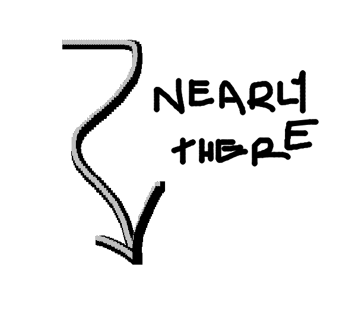
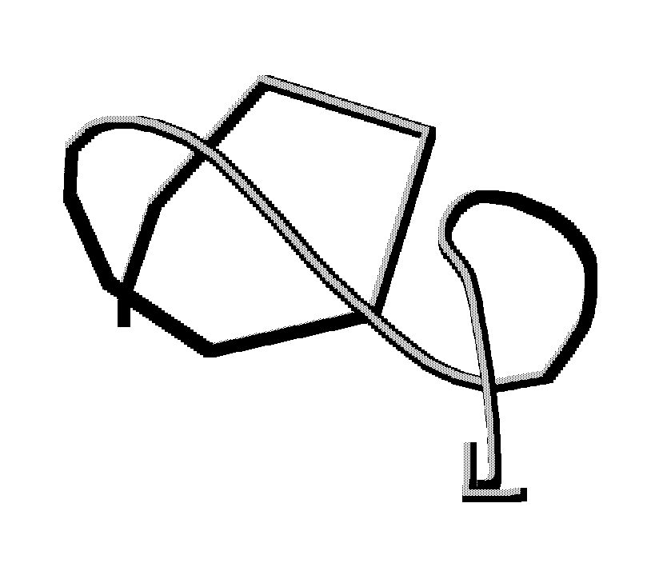

*
*
*


- Troll Face -
Vs.
- Pepe The Frog -
* overall: servere hilarity * species: unknown * mood: amused
* gender: male * species: frog * mood: temperate
ASSIMILATION
A successful meme must be able to "infect" a new host, that is, enter into its memory. Let us assume that a meme is presented to a potential new host. "Presented" means either that the individual encounters a meme vehicle, or that he or she independently discovers it, by observation of outside phenomena or by thought, i.e. recombination of existing cognitive elements. To be assimilated, the presented meme must be respectively noticed, understood and accepted by the host.

*
*
*
RETENTION
The second stage of memetic replication is the retention of the meme in memory. By definition, memes must remain some time in memory, otherwise they cannot be called memes. The longer the meme stays, the more opportunities it will have to spread further by infecting other hosts. This is Dawkins's (1976) longevity characteristic for replicators.
1/3
1/3
*
*
*
EXPRESSION
To be communicated to other individuals, a meme must emerge from its storage as memory pattern and enter into a physical shape that can be perceived by others. This process may be called "expression". The most obvious means of expression is speech. Other common means for meme expression are text, pictures, and behavior. Expression does not require the conscious decision of the host to communicate the meme. A meme can be expressed simply by the way somebody walks or manipulates an object, or by what he or she wears.
*
*
*
TRANSMISSION
Selection at the transmission stage happens through either elimination of certain memes, when the vehicle is destroyed or gets corrupted before it is perceived by another individual, or through differential multiplication, when the vehicle is reproduced into many copies. For example, a manuscript may be put into the shredder or it may be turned into a book which is printed in thousands of copies. A radio communication may get lost because of noise, or it may be broadcasted to millions of listeners. Especially since the emergence of mass media, including the electronic network, the transmission stage is the one where the contrast between successful and unsuccessful memes is largest, and where selection may have the largest impact.

